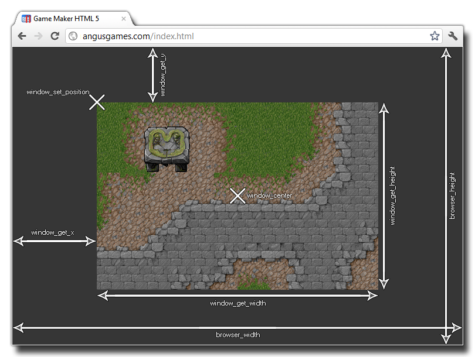

The actual game you create happens in a window, and this window has a number of properties, like whether it has a border, whether it is full screen, etc. Normally these values are set in the
Windows Tab of the Global game Settings but you can change
them during the game.
NOTE : These functions are for Windows, Ubuntu (Linux), MacOS and HTML5 target modules only and may not work on any other device.
The following image illustrates how all the windows functions relate and interact with each other:

The following functions exist to change and get game window properties:
- window_center
- window_handle
- window_get_caption
- window_get_color
- window_get_fullscreen
- window_get_height
- window_get_width
- window_get_x
- window_get_y
- window_get_cursor
- window_mouse_get_x
- window_mouse_get_y
- window_mouse_set
- window_set_caption
- window_set_color
- window_set_fullscreen
- window_set_position
- window_set_size
- window_set_rectangle
- window_set_cursor